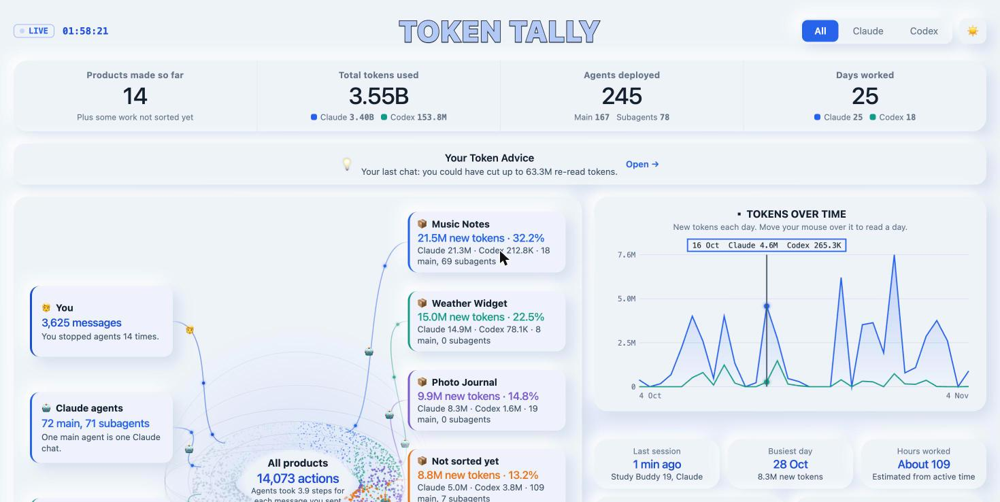
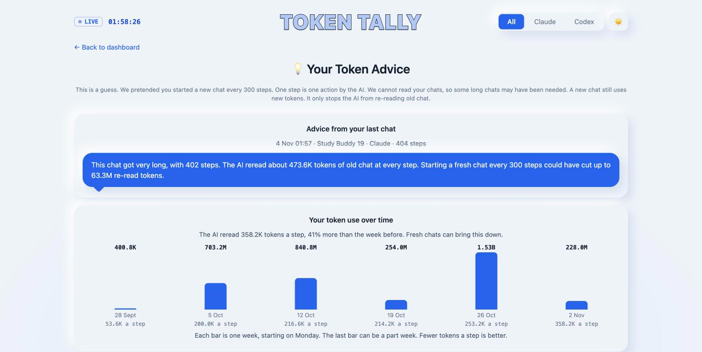

Token Tally
A free dashboard that shows how many tokens Claude Code and Codex used for each product you made. It also gives simple advice to use fewer.
npx -y @manyatamanocha/token-tallyPaste it in Terminal. You need Node.js 20 or newer.

What it shows
📦Each product
Tokens, days, hours and agents for every product you built.
🤖Claude and Codex apart
See which AI did the work, and which models it used.
💡Advice after each chat
Find out when a chat got too long, and how many tokens a fresh chat could have saved.
📈Your progress
A weekly chart shows if you are using fewer tokens over time.

Your data stays with you
Runs on your computer
It reads the log files that Claude Code and Codex already keep on your computer.
Sends nothing
There is no account and no server. Nobody else can see your numbers.
Numbers only
It saves counts and dates. It never saves your chats or file names.
How to start
- Install Node.js from nodejs.org, if you do not have it.
- Open Terminal and paste
npx -y @manyatamanocha/token-tally - Type y when it asks to connect to Claude Code. Your numbers then keep saving.
- Your dashboard opens in the browser. Keep the Terminal window open.